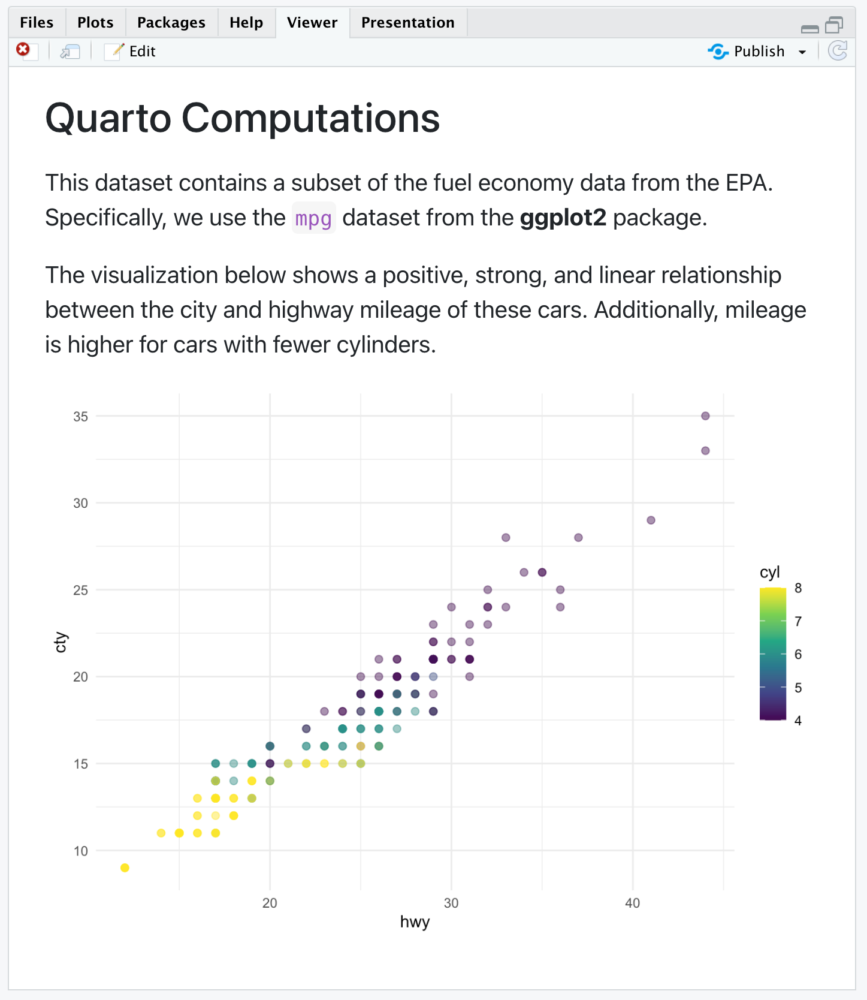
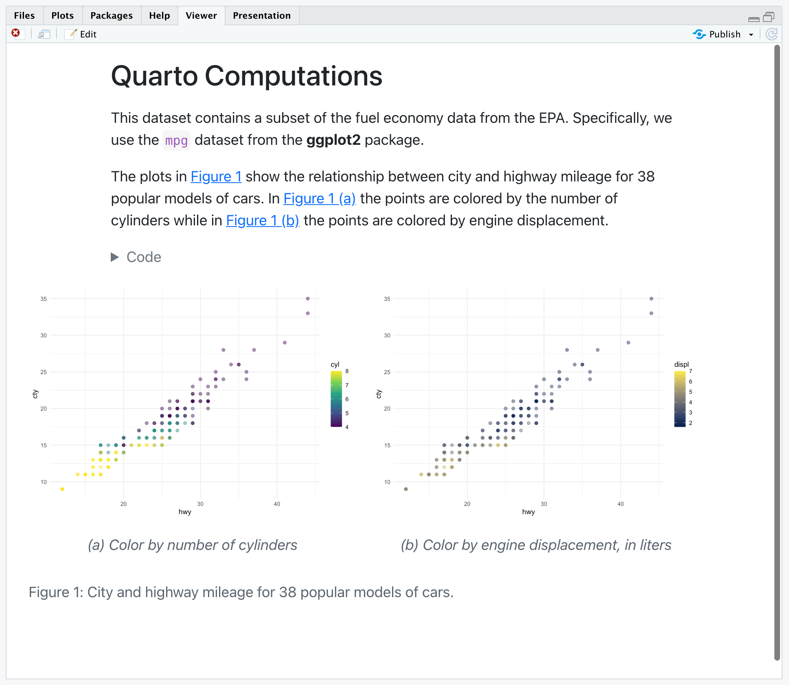

Do RMarkdown para o Quarto
Do RMarkdown para o Quarto
Quarto suporta blocos de código executáveis dentro do markdown. Isto permite que você crie documentos e relatórios totalmente reprodutíveis - o código necessário para produzir sua saída faz parte do próprio documento e é automaticamente executado novamente sempre que o documento é renderizado.
Se você quiser acompanhar o passo-a-passo em seu próprio ambiente, faça o download do documento Quarto (.qmd) abaixo, abra-o no RStudio, e clique em ou e o atalho de teclado ⇧⌘K). Recomendamos também marcar a caixa para Render em Save para uma visualização ao vivo de suas alterações.
Note que você precisará abrir este documento no último lançamento do RStudio (v2022.07).
Output do chunk de código
Por padrão, o código e sua saída são exibidos dentro do documento apresentado.

Entretanto, para alguns documentos, você pode querer esconder todo o código e apenas mostrar a saída. Para isso, especifique echo:false.
---
title: "Quarto Computations"
execute:
echo: false
---Se você clicou Render no Save antes, basta salvar o documento após fazer esta mudança para uma visualização ao vivo. Caso contrário, faça com que o documento seja renderizado pra ver suas atualizações. O resultado será parecido com o seguinte.

Você pode querer ativar seletivamente o código echo para algumas células. Para fazer isso, adicione a opção echo: true. Tente isto com o pedaço rotulado “scatterplot”.
#| label: scatterplot
#| echo: true
ggplot(mpg, aes(x = hwy, y = cty, color = cyl)) +
geom_point(alpha = 0.5, size = 2) +
scale_color_viridis_c() +
theme_minimal()Salve o documento novamente e note que o código agora está incluído para a parte do “scatterplot”.

A opção echo pode ser definida como true, false, ou fenced. A última pode ser de especial interesse para escrever documentação e materiais didáticos, pois permite incluir o delimitador de código cercado em sua saída de código para enfatizar que o código executável requer esse delimitador. Você pode ler mais sobre esta opção na documentação Fenced Echo.
Há um grande número de outras opções disponíveis para a saída de células, por exemplo, “warning” para mostrar/ocultar avisos (que podem ser especialmente úteis para mensagens de carregamento de pacotes), dentre outras.
Veja Knitr Cell Options para informações adicionais.
Escondendo o código
Ao invés de esconder inteiramente o código, talvez seja melhor dobrá-lo e permitir que os leitores o vejam a seu critério. Você pode fazer isso através da opção “code-fold”. Remova a opção echo que adicionamos anteriormente e adicione a opção code-fold em formato HTML.
---
title: "Quarto Computations"
format:
html:
code-fold: true
---Salve o documento novamente e observe que novos widgets de código estão agora incluídos para cada pedaço de código.
![RStudio with computations.qmd open. On the right is the visual editor. The YAML has title and format defined. Title is Quarto Computations. Format is html, and code-fold option is set to true. On the right is the rendered version of the document. The title is followed by some text, which is followed by a Code widget that would expand if clicked on, which is followed by some more text, another code widget, and finally the plot. The Code widgets are folded, so the code is not visible in the rendered document.](img/rstudio-code-fold-preview.png)
Você também pode fornecer controle global sobre esconder o código. Tente adicionar “cold-tools: true” às opções de formato HTML.
---
title: "Quarto Computations"
format:
html:
code-fold: true
code-tools: true
---Salve o documento e você verá que um menu de códigos aparece na parte superior direita do documento apresentado, o que proporciona controle global sobre a exibição e ocultação de todos os códigos.
![Rendered version of the computations.qmd document. A new code widget appears on top right of the document. The screenshot shows that the widget is clicked on, which reveals a drop down menu with three choices: Show All Code, Hide All Code, and View Source. In the background is the rendered document. The title is followed by some text, which is followed by a Code widget that would expand if clicked on, which is followed by some more text, another code widget, and finally the plot. The Code widgets are folded, so the code is not visible in the rendered document.](img/rstudio-code-tools-preview.png)
Code Linking
A opção code-link permite hiperligação de funções dentro de blocos de código para sua documentação on-line. Tente adicionar code-link: true às opções de formato HTML.
---
title: "Quarto Computations"
format:
html:
code-link: true
---Salve o documento e observe que as funções agora são hiperlinks clicáveis.
 Note que a ligação de códigos está atualmente implementada apenas para o motor de malha através do pacote downlit.
Note que a ligação de códigos está atualmente implementada apenas para o motor de malha através do pacote downlit.
Figuras
Podemos melhorar a aparência e a acessibilidade da nossa figura. Podemos mudar sua relação de aspecto definindo fig-width e fig-height, fornecer um fig-cap, modificar seu label para referência cruzada, e adicionar texto alternativo com fig-alt.
Vamos adicionar as seguintes opções.
#| label: fig-scatterplot
#| fig-cap: "City and highway mileage for 38 popular models of cars."
#| fig-alt: "Scatterplot of city vs. highway mileage for cars, where points are colored by the number of cylinders. The plot displays a positive, linear, and strong relationship between city and highway mileage, and mileage increases as the number cylinders decreases."
#| fig-width: 6
#| fig-height: 3.5Salve o documento. Note que também atualizamos a chamada com uma [referência cruzada] (https://quarto.org/docs/authoring/cross-references.html#computations) para esta figura usando o seguinte.
@fig-scatterplot shows a positive, strong, and linear relationship between the city and highway mileage of these cars.![RStudio with computations.qmd open. On the right is the visual editor. The YAML has title and format defined. Title is Quarto Computations. Format is html, and code-fold option is set to true. Compared to earlier images on the page, the code chunk shows the new chunk options added to the code chunk. On the right is the rendered version of the document. The title is followed by some text, which is followed by a Code widget that would expand if clicked on, which is followed by some more text, another code widget, and finally the plot. The Code widgets are folded, so the code is not visible in the rendered document.](img/rstudio-figure-options.png)
Múltiplas Figuras
Acrescentemos outro elemento - um gráfico de dispersão onde os pontos são coloridos pelo deslocamento do motor, usando uma escala de cor diferente. Nosso objetivo é exibir estes gráficos lado a lado (ou seja, em duas colunas), com uma sublegenda descritiva para cada gráfico. Como isto produzirá uma visualização mais ampla, utilizaremos também a opção column para dispor em toda a página, em vez de ficarmos restritos à coluna de texto do corpo.
Há algumas mudanças neste trecho. Para acompanhar, copie e cole as opções descritas abaixo em seu documento Quarto.
#| label: fig-mpg
#| fig-cap: "City and highway mileage for 38 popular models of cars."
#| fig-subcap:
#| - "Color by number of cylinders"
#| - "Color by engine displacement, in liters"
#| layout-ncol: 2
#| column: page
ggplot(mpg, aes(x = hwy, y = cty, color = cyl)) +
geom_point(alpha = 0.5, size = 2) +
scale_color_viridis_c() +
theme_minimal()
ggplot(mpg, aes(x = hwy, y = cty, color = displ)) +
geom_point(alpha = 0.5, size = 2) +
scale_color_viridis_c(option = "E") +
theme_minimal()Além disso, substitua o texto existente que descreve a visualização pelo seguinte.
The plots in @fig-mpg show the relationship between city and highway mileage for 38 popular models of cars.
In @fig-mpg-1 the points are colored by the number of cylinders while in @fig-mpg-2 the points are colored by engine displacement.Em seguida, salve o documento e inspecione a saída renderizada, que deve se parecer com o seguinte.

Vamos discutir algumas das novas opções utilizadas aqui. Você já viu fig-cap antes, mas agora adicionamos um fig-subcap.
#| fig-cap: "City and highway mileage for 38 popular models of cars."
#| fig-subcap:
#| - "Color by number of cylinders"
#| - "Color by engine displacement, in liters"Para células de código com múltiplas saídas, adicionar a opção ‘fig-subcap’ nos permite tratá-las como subfiguras.
Também adicionamos uma opção para controlar como múltiplas figuras são dispostas - neste caso, especificamos lado a lado em duas colunas.
#| layout-ncol: 2Se você tiver 3, 4 ou mais figuras em um painel, há muitas opções disponíveis para personalizar seu layout. Veja o artigo Figure Layout para detalhes.
Finalmente, adicionamos uma opção para controlar a extensão da página que nossas figuras ocupam.
#| column: pageIsto permite que nossa exibição de figuras se estenda além da coluna de texto normal do corpo. Consulte a documentação sobre Layout do Artigo para saber mais sobre todas as opções de layout disponíveis.
Data Frames
Você pode controlar como os dataframes são impressos por padrão utilizando a opção de documento df-print. As opções disponíveis incluem:
| Option | Description |
|---|---|
default |
Use o método S3 padrão para o data frame. |
kable |
Tabela Markdown usando a função knitr::kable(). |
tibble |
Tabela de texto usando o pacote tibble. |
paged |
Tabela HTML com paginação para linhas e colunas que não são apresentadas (implementado usando rmarkdown::paged_table()) |
Por exemplo, aqui especificamos que queremos impressão paginada para o dataframe:
---
title: "Document"
format:
html:
df-print: paged
---Inline Code
Para incluir expressões executáveis dentro do markdown, incluir a expressão em r. Por exemplo, podemos utilizar código em linha para declarar o número de observações em nossos dados. Tente adicionar o seguinte texto de html ao seu documento Quarto.
There are `r nrow(mpg)` observations in our data.
Salve seu documento e inspecione a saída entregue. A expressão dentro dos backticks foi executada e a sentença inclui o número real de observações.
There are 234 observations in our data.
Se a expressão que você deseja inline for mais complexa, envolvendo muitas funções ou um pipeline, recomendamos incluí-la em um pedaço de código (com echo: falso) e atribuir o resultado a um objeto. Então, você pode chamar esse objeto em seu código em linha.
Por exemplo, digamos que você queira declarar a quilometragem média da cidade e da rodovia em seus dados. Primeiro, calcule estes valores em um pedaço de código.
#| echo: false
mean_cty <- round(mean(mpg$cty), 2)
mean_hwy <- round(mean(mpg$hwy), 2)Em seguida, adicione o seguinte texto de marcação para baixo ao seu documento Quarto.
The average city mileage of the cars in our data is `r mean_cty` and the average highway mileage is `r mean_hwy`.
Salve seu documento e inspecione a saída entregue.
The average city mileage of the cars in our data is 16.86 and the average highway mileage is 23.44.
Caching
Se seu documento inclui pedaços de código que levam muito tempo para serem computados, você pode querer armazenar em cache os resultados desses pedaços. Você pode utilizar a opção cache tanto no nível do documento utilizando a opção executar YAML.
execute:
cache: trueEntretanto, o cache de todos os pedaços de código em um documento pode não ser preferível. Você também pode indicar quais blocos devem ser armazenados em cache diretamente com o uso de uma opção de bloco.
#| cache: trueTry adding this chunk option to one of the code chunks in your document that produces a plot and save. When the document is rendered, you’ll see that a new folder has been created in your working directory with the same name as your document and the suffix _cache. This folder contains the cached results. You can find out more about caching in Quarto documents in the Cache documentation.
If you followed along step-by-step with this tutorial, you should now have a Quarto document that implements everything we covered. Otherwise, you can download a completed version of computations.qmd below.